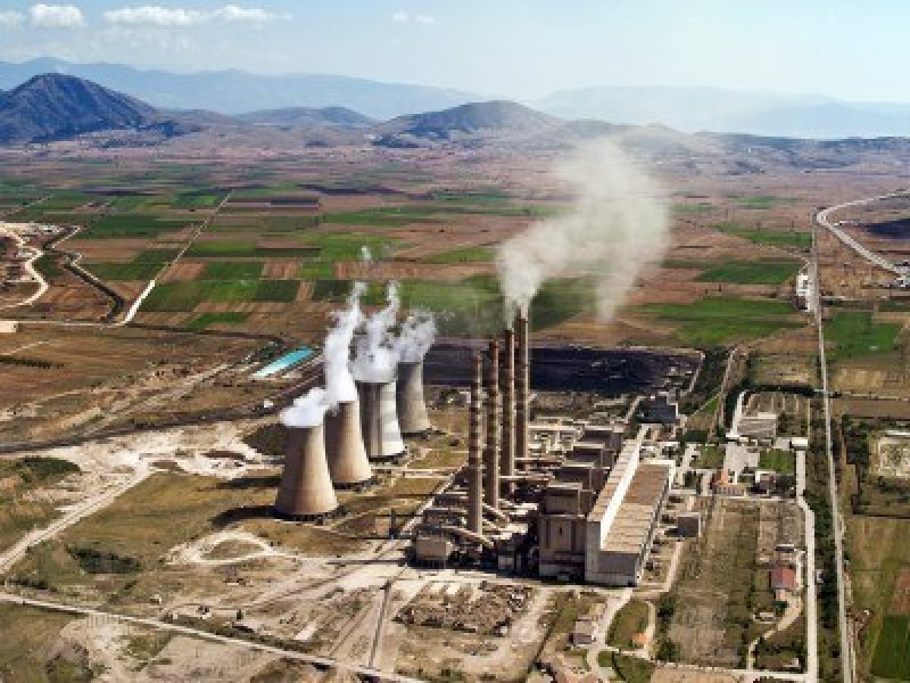
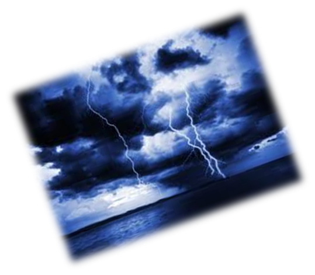

| Pannelli Fotovoltaici | I pannelli solari sono dispositivi tecnologici in grado di sfruttare l'energia solare trasformandola in energia utile per l'uomo. La definizione di pannelli solari è tratta dalla pagina pannelli solari. Nell'ambito pannelli solari troviamo altre voci di approfondimento: pannelli solari fotovoltaici, collettori solari, pannello solare a concentrazione, solare termodinamico. |
 |
| Pannelli fotovoltaici conici |
Pannelli fotovoltaici di forma conica, in grado di produrre 20 volte più energia di quelli tradizionali. È questa l’ultima innovazione, denominata Spin, di V3Solar, che è riuscita a migliorare la resa delle celle solari sfruttando non solo la forma inconsueta, ma anche componenti elettroniche innovative e la rotazione del pannello.
Ciascun modulo, in particolare, è costituito da due diversi strati conici, uno
Il cono interno dei pannelli, inoltre, è in grado di ruotare per evitare problemi |
|
| Dinamo Elettrica | La dinamo è una macchina elettrica rotante, che converte l’energia meccanica, ricevuta da un motore di trascinamento, in energia elettrica, con tensione e corrente unidirezionali e possibilmente costanti nel tempo. Pur non trovando quasi più impieghi per questa funzione, ormai superata dai convertitori statici che hanno ingombri, costi e rendimenti non confrontabili, tuttavia verrà dedicata ad essa una certa attenzione, per poter meglio giustificare il funzionamento reversibile della macchina, impiegata come motore. La macchina, come si vedrà, può infatti passare con continuità dalla funzione di motore a quella di generatore, con interessanti applicazioni rigenerative. |
|
| Centrali Combustibile Fossile | I combustibili fossili consistono in depositi di organismi morti, la materia organica impiega secoli per formarsi e consiste principalmente di carbonio e idrogeno legati. Esistono tre tipi di combustibili fossili che possono essere usati per la produzione energetica: carbone, olio e gas naturale. |
 | Resorse Naturali | E' risorsa naturale tutto ciò che può essere utilizzato dall'uomo per le proprie esigenze, sia allo stato originario, sia dopo essere stato trasformato. Le risorse naturali si dividono in risorse biologiche, esseri viventi impiegati come alimenti o erbe che nutrono animali che utilizzeremo come alimenti, e altre risorse fisiche, aria, acqua, terreno, combustibili fossili e materiali vari. |
| Centrali fonti Rinnovabili/Alternative |
Sono da considerarsi energie rinnovabili quelle forme di energia generate da fonti che per loro caratteristica intrinseca si rigenerano o non sono "esauribili" nella scala dei tempi "umani" e, per estensione, il cui utilizzo non pregiudica le risorse naturali per le generazioni future. Sono dunque generalmente considerate "fonti di energia rinnovabile" il sole, il vento, il mare, il calore della Terra, ovvero quelle fonti il cui utilizzo attuale non ne pregiudica la disponibilità nel futuro, mentre quelle "non rinnovabili", sia per avere lunghi periodi di formazione superiori a quelli di consumo attuale (in particolare fonti fossili quali petrolio, carbone, gas naturale), sia per essere presenti in riserve non inesauribili sulla scala dei tempi umana (in particolare l'isotopo 235 dell'uranio, l'elemento attualmente più utilizzato per produrre energia nucleare), sono limitate nel futuro. La classificazione delle diverse fonti è comunque soggetta a molti fattori, non necessariamente scientifici, creando non uniformità di classificazione. |
|
| Centali Eoliche | Una centrale eolica è costituita essenzialmente da turbine rotanti dette aeromotori eolici o aerogeneratori che con il loro movimento inducono un campo elettromagnetico producendo energia elettrica. Nell'incontro con le pale della turbina, il vento perde circa il 40% della propria energia cinetica, che viene utilizzata per azionare la turbina; l'energia meccanica prodotta viene poi trasformata in energia elettrica dal generatore. Vantaggi: energia pulita vento è disponibile in moltissime zone della terra, non inquina, è inesauribile.
Svantaggi: 1.Costano tanto 2.Hanno bisogna tanto manutenzione 3.Non funzionano sempre |

|
| Energia Solare | L'energia solare è una delle principali fonti di energia rinnovabile. Con il termine energia solare si intende la produzione di energia termica ed elettrica ottenuta fruttando i raggi solari. L'energia solare può essere sfruttata utilizzando diverse tecnologie rinnovabili come i pannelli solari. |
|
| Centrali Idroelettriche | La centrale idroelettrica trasforma l'energia prodotta da un corso d'acqua, naturale o artificiale, in energia elettrica. Queste centrali hanno meno impatto ambientale rispetto ad altre, Vantaggi: principale di utilizzare questo tipo di energia, sta nel fatto che è illimitata, costa meno e non richiede combustibili o materie prime. Svantaggi:
1.Costo di costruzione di realizzazione molto elevato 2.il patto ambientale elevato. 3.Si modificail clima della valle. |
 |
| Accumulatori | Gli accumulatori di carica elettrica o batterie ricaricabili o pile secondarie o accumulatori (abbreviato in accu/akku) sono batterie la cui carica può essere completamente ristabilita mediante l'applicazione di un'adeguata energia elettrica. Le caratteristiche fondamentali sono la tensione ai morsetti (espressa in volt) e la capacità (espressa in ampereora). |
 |

